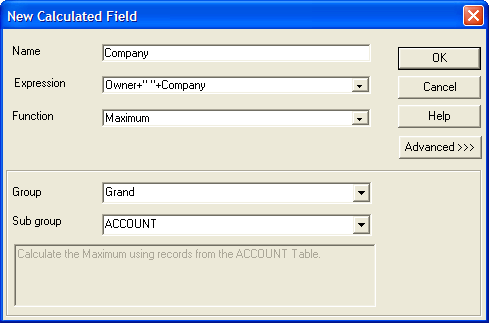

Using the Drag and Drop List
The Drag-and-Drop List provides an easy way to place data fields, system fields, calculated fields, and variables on a layout. The Drag-and-Drop List window will list all the available data fields for your layout.

If the Drag-and-Drop List is not visible, select View > Drag-Drop List or click .
Select what to place on the form. Make a selection from the drop-down list at top. The options are:
"Fields with Titles"
"Fields"
"Field Titles only"
If you are placing titles:
Depress
 if you want the titles to be placed above the fields. After fields have been placed on the form, you can change the style, appearance, and other attributes of the fields.
if you want the titles to be placed above the fields. After fields have been placed on the form, you can change the style, appearance, and other attributes of the fields.Depress
 if you want the titles to be place to the left of the fields.
if you want the titles to be place to the left of the fields.To place one or more data fields, select them and drag them onto the layout.
By default, fields initially appear as Type-In controls. You may right click on the control, select Properties..., and change the type of data control to be displayed. Refer to Setting Field Properties.
When adding multiple fields, you can specify their alignment as vertical or horizontal by clicking on the appropriate alignment button above the Drag-and-Drop List.
When you are working with a form based on a set, you may want to summarize child table fields. To create a summary field:
If the Drag-and-Drop List is not visible, select View > Drag-Drop List or click .
Click
 to enable the Summary Genie.
to enable the Summary Genie.Drag the field onto the layout. The resulting dialog box will depend on the data in the field you selected. The following show a the Summary Genie that appears when the field contains a numeric value.

Select the summary calculation. Depending on the type of field, the options are to display:
"Value in the field (no summary)"
"Total of the field"
"Average of the field"
"Count of the records"
"Minimum value in the field"
"Maximum value in the field"
"Other summary function"
"First field value in group"
"Last field value in group"
If you select "Other summary function", you may select one of the following options:
"Count duplicates"
"First in group"
"Last in group"
"Standard deviation"
"Standard deviation for population"
"Variance"
"Variance for population"
Alpha Five makes assumptions about how to perform these summaries. You may click Advanced to display the Summarization Advanced Settings dialog.
Optionally, change the way records were grouped to calculate the summary. The options are:
"Grand"
Parent table (and higher level parents, if they exist)
Optionally, change the name of the calculated field that will be created.
Optionally, change the total display length of the field.
Optionally, change the number of decimal places that will be displayed.
Click OK to continue or Cancel to discard your inputs.
Click Finish to place the field or Cancel to discard your inputs.
Creating and Placing Calculated Values
The Drag-and-Drop List also contains an entry labeled "
For example, you have an invoice form on which you want to display the total of line-items. The easiest way to create a calculated value is by dragging "

New Calculated Field Dialog Box
To place a calculated field:
If the Drag-and-Drop List is not visible, select View > Drag-Drop List or click .
Select and drag "
" onto the form. When the New Calculated Field dialog appears, enter the Name of the new field.
Enter the Expression that defines the field or combination of fields that provide the data for the calculation. Optionally, click
 to display the <span class=Screen>Expression Builder</span> to help you define this calculation expression.
to display the <span class=Screen>Expression Builder</span> to help you define this calculation expression.Select the Function you would like to perform. The options are:
Value (of the calculation expression)
Count
Minimum
Maximum
First
Last
Count of Duplicate
Blank Duplicates
Running Count
Running Minimum
Running Maximum
Below are some examples of typical calculations:
Description | Name | Expression | Function |
Calculates 5% sales tax using the Subtotal field | TAX | INVOICE->SUBTOTAL*.05 | Value |
Calculates the total of line-items, given that the total of each item is stored in the field Total of the Item table. | TOTAL | ITEM->TOTAL | Total |
Evaluates to today's date | TODAY | DATE() | Value |
 Note : Calculated fields can be created for a specific form, or for a table or set. If you create them for a form, they are available to only that form. For more information on creating calculated fields for a table or set, refer to Functions and Expressions?.
Note : Calculated fields can be created for a specific form, or for a table or set. If you create them for a form, they are available to only that form. For more information on creating calculated fields for a table or set, refer to Functions and Expressions?.
Optionally, click Advanced >>> to display the Group and Sub group fields.
Optionally, change the way records were grouped to calculate the summary. The options for the Group field are:
"Grand"
Parent table (and higher level parents, if they exist)
Optionally, change the way records were sub-grouped to calculate the summary. The options for the Group field are:
"Grand"
Parent table (and higher level parents, if they exist)
Alpha Five provides predefined system fields that you can add to your layout. These system fields can display information such as Page numbers, current date, and sort order. System fields are global fields that are available throughout the Alpha Five program. You use the Drag-and-Drop List to insert system fields in a layout.
The following table describes Alpha Five system fields:
Field | Description |
PageNumber | Prints the current page number of the layout. This predefined calculated field uses the PAGENO() function as its expression. See also Inserting Page Numbers. |
PageXofY | Prints the page number and the total number of pages in the layout. For example, a field value of Page 1 of 8 indicates the first page in a eight page Report layout. |
Date | Prints the computer's system date on the layout. This predefined calculated field uses the DATE() function as its expression. See also Inserting Today's Date. |
Current_Order | Prints the sort order expression for the layout. This predefined calculated field uses the CURRENT_ORDER_EXPN() function as its expression. |
Current_Filter | Prints the record selection expression on the layout. This predefined calculated field uses the CURRENT_FILTER_EXPN() function as its expression. |
Layout Name | Shows the name of the current layout. |
Data Source | Shows the name of the table or set on which the layout is based. |
To place a system field:
If the Drag-and-Drop List is not visible, select View > Drag-Drop List or click .
Select and drag the selected system field onto the layout.
Creating and Placing Layout Variables
You may create a variable when you are editing a layout. To create and place a layout variable:
If the Drag-and-Drop List is not visible, select View > Drag-Drop List or click .
Optionally, select and drag the selected form variable onto the layout.
Optionally, select "
" and drag it onto the layout. In the resulting New Variable dialog enter the Name of the new variable.
Select the Type of the variable. The options are:
"Character"
"Date"
"Logical"
"Numeric"
Click OK to create and place the variable or Cancel to discard your inputs.